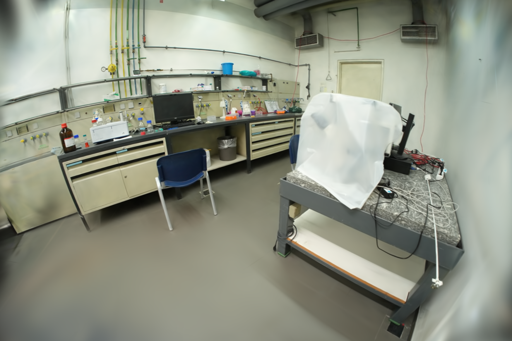
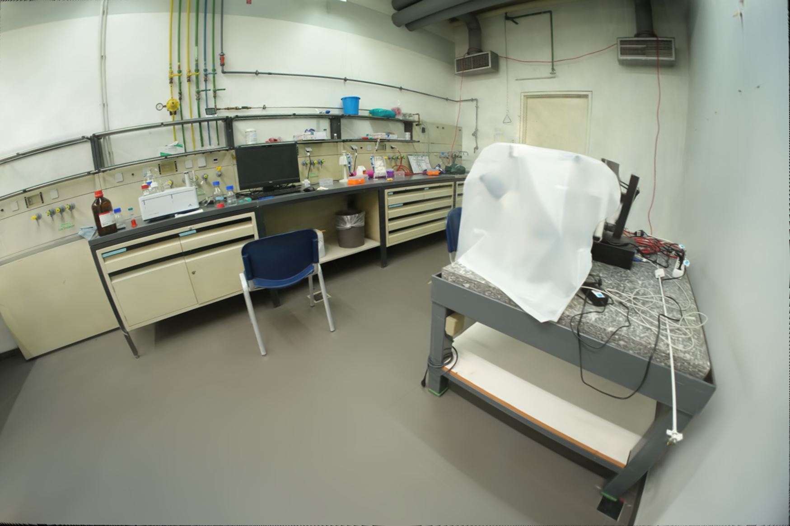
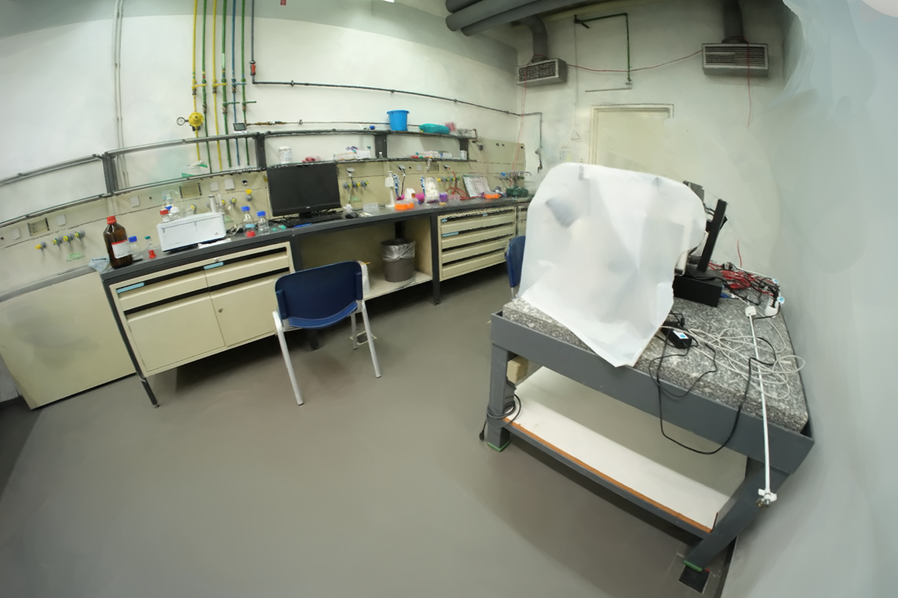
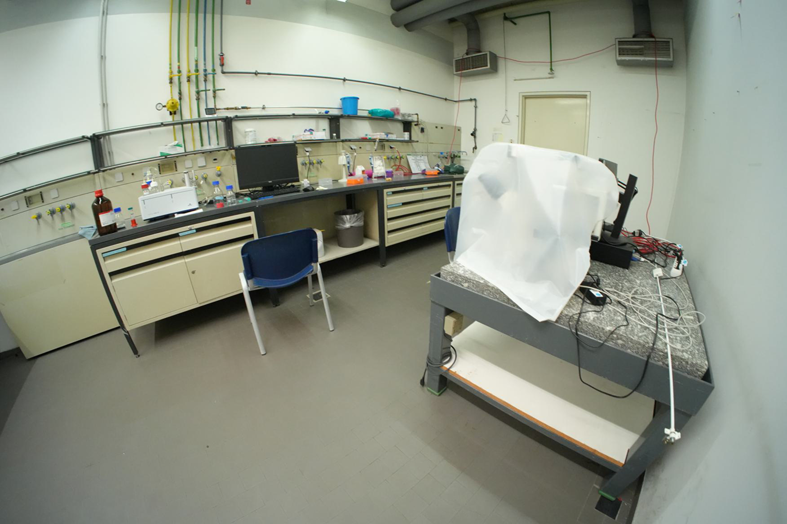
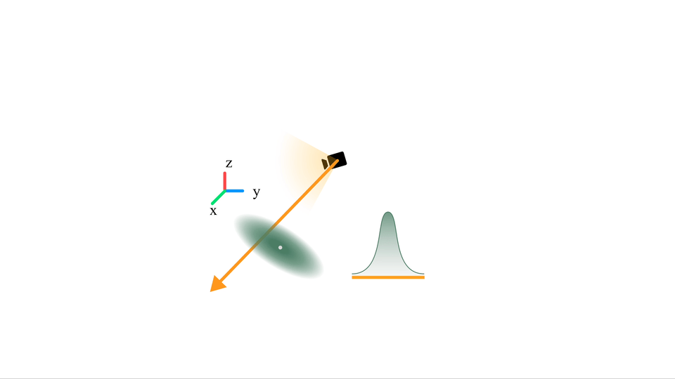
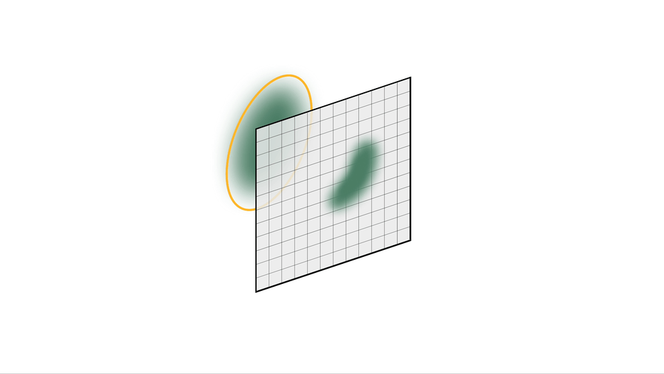
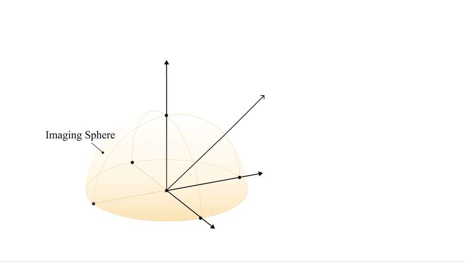

3DGEER: 3D Gaussian Rendering
Made Exact and Efficient for Generic Cameras
ICLR 2026
- Bosch Research North America & Bosch Center for AI (BCAI)
Overview
3D Gaussian Splatting (3DGS) has rapidly become one of the most influential paradigms in neural rendering. It delivers impressive real-time performance while maintaining high visual fidelity, making it a strong alternative to NeRF-style volumetric methods. But there is a fundamental problem hiding beneath its success:
Splatting doesn't obey exactness in projective geometry.
The splatting approximation is usually harmless for narrow field-of-view (FoV) pinhole cameras. However, once we move to fisheye, omnidirectional, or generic camera models — especially those common in robotics and autonomous driving — the approximation error becomes significant.
Can Gaussian rendering be both exact and fast without relying on lossy splatting? 3DGEER (3D Gaussian Exact and Efficient Rendering) answers this question with a resounding "Yes" by introducing:
- Projective exactness + Real-time efficiency
- Compatibility with generic camera models (pinhole / fisheye) + Strong generalization to extreme FoV
- Adaptation to widely-used GS frameworks including
diff-gaussian-rasterization,gsplat,drivestudio
Paper Fast Forward
Visual Comparison (check more results.)
3DGEER outperforms both 3DGS-based (Gaussian Splatting) and 3DPRT-based (Particle Ray Tracing) approaches on novel view synthesis benchmarks — including MipNeRF360 (pinhole), ScanNet++ (fisheye) and ZipNeRF (mix). 3DGEER achieves high rendering fidelity while remaining runtime-efficient — 5× faster than 3DPRT (e.g., EVER, 3DGRT) and comparable to 3DGS, with no sacrifice in exactness.
Out-Of-Distribution (OOD) + Extreme-Wide FoV Views
Side-by-Side Comparison on Close-Up Parking Data: 3DGEER's PBF association (Right) has less popping issues and grid-line-error artifacts compared w/ UT (Left) association.
|
3DGUT |
Ours (3DGEER) |
MipNeRF360 (Pinhole)
3DGS (PSNR: 27.21; FPS: 343) v.s. 3DGRT (PSNR: 27.20; FPS: 52) v.s. 3DGEER (Ours) (PSNR: 27.76; FPS:327)
|
|
|
|
ScanNet++ (Fisheye)
FisheyeGS (PSNR:27.81; FPS:213) v.s. EVER (PSNR: 29.47; FPS: 13) v.s. 3DGEER (Ours) (PSNR: 31.50; FPS: 251)
|
  |
 |
 |
ZipNeRF Close-Up Views (click to zoom-in.)
Our method (3DGEER) can handle soft shadow / lights or close views where the solid ellipsoid-based model (EVER) suffers.
|
EVER |
Ours |
EVER |
Ours |
ZipNeRF Large FoV Views (click to zoom-in.)
3DGUT and FisheyeGS are based on equidistant model for representations, which fail in much wider FoV. (See paper Fig. 5). Our method (3DGEER) can effectively sample rays in larger FoV regions and show much better results.
|
3DGUT |
Ours |
FisheyeGS |
Ours |
⚠️ HD video loading time may vary based on your internet speed and available browser memory.
More HD Visual Result (click to zoom-in.)
High-Quality Large FoV Results
Highly Distorted & Close-Up Views
Cross-Camera Rendering (train: FE 1/8; test: PH 1/4)
⚠️ HD video loading time may vary based on your internet speed and available browser memory.
Key Takeaway
Ray-Gaussian Integral
We derive projective-exact ray-Gaussian integral to eliminate local affine approximation.

Particle Bounding Frustum (PBF) Association
We present high-speed rendering using an exact and efficient ray-particle association method.

Bipolar Equiangular Projection
We sample rays for color supervision in a unified angular space.

Citation
If you want to cite our work, please use:
@misc{3dgeer,
title={3DGEER: 3D Gaussian Rendering Made Exact and Efficient for Generic Cameras},
author={Zixun Huang and Cho-Ying Wu and Yuliang Guo and Xinyu Huang and Liu Ren},
year={2025},
eprint={2505.24053},
archivePrefix={arXiv},
primaryClass={cs.GR},
url={https://arxiv.org/abs/2505.24053},
}
Special Extension OSS Acknowledgements
gsplat-geer (released here) and drivestudio-geer (TBD) Extensions
Core Contributors:
Edward Lee1,2* (GEER Public Integration),
Zixun Huang1,‡ (GEER Algorithm Derivation / Implementation),
Cho-Ying Wu1 (GEER Implementation)
Senior Mgmt:
Wenbin He1, Xinyu Huang1
Supervision:
Liu Ren1
Acknowledgements for additional contributions:
Hengyuan Zhang1 (Close-Up Parking Data Calibration)
Institution Acknowledgements
1 Bosch Center for AI, Bosch Research North America 2 Stanford University
The special extension work was performed when * worked as an intern at 1 under the mentorship of ‡.
Webpage Design Acknowledgements
The website template was borrowed from Michaël Gharbi and MipNeRF360.